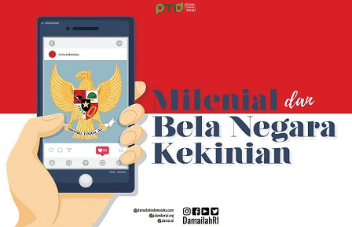

Pendidikan Multikultural bagi Generasi Millenial di Era Digital
Keragaman sebagai karakter bangsa Indonesia ibarat dua sisi koin mata uang. Itu artinya...
President School Siapkan Generasi Milenial masuki Era 4.0
President School, yang merupakan bagian dari PT Jababeka Tbk., bidang pendidikan, berupaya...
Pendidikan Karakter Berbasis Digital
Semakin canggihnya teknologi, seharusnya menjadi titik fokus bagaimana kita harus semakin giat...

Generasi Milenial dan Bela Negara Kekinian
Survei Alvara Research pada 2016, menyebutkan bahwa penduduk usia 15-34 tahun mencapai...
Gelar Diskusi Peran Generasi Millenial Sebagai Agen Persatuan
Sambut Hari Kesaktian Pancasila, Pintu Aceh Gelar Diskusi Peran Generasi Millenial Sebagai Agen...
Tantangan Mengajar Generasi Millenial
Pendidik siswa di masa lalu berbeda dengan di masa sekarang, yang atau yang disebut generasi...